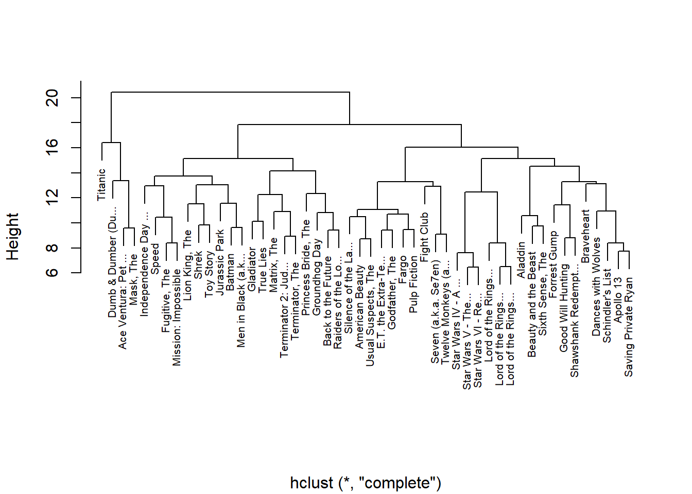
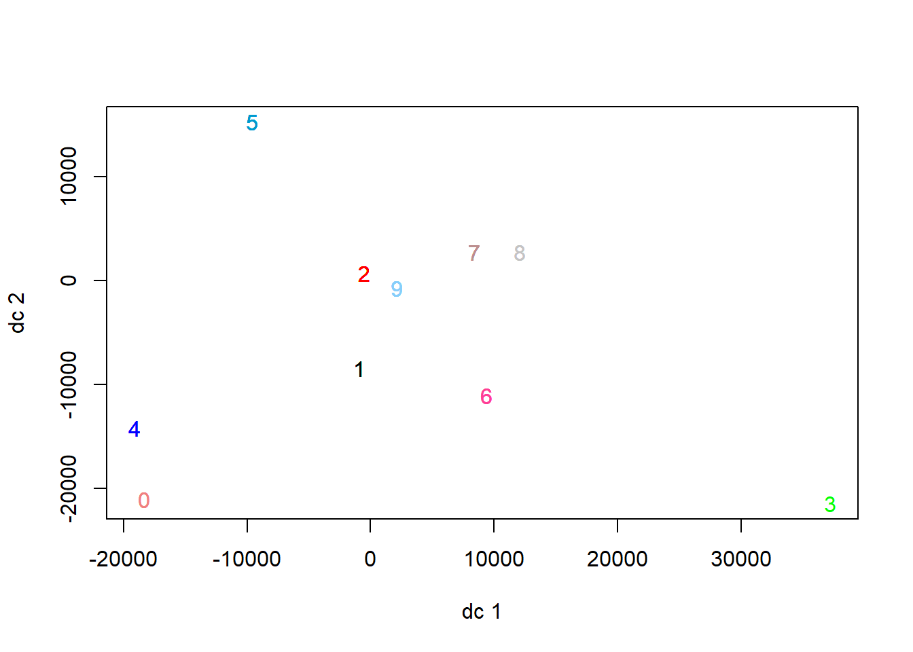

Clustering involves organizing a set of items so that those within the same group (called a cluster) are more alike to each other than to those in different groups. It is frequently employed by data experts during exploratory data analysis to uncover fresh insights and trends within data. Since clustering falls under unsupervised machine learning, it operates without the need for labeled datasets.
Clustering, in contrast to supervised learning tasks like classification or regression, lacks a complete end-to-end automation capability. Instead, it involves an iterative process of uncovering information that necessitates expertise in the field and frequent human judgment for adjusting both data and model parameters to achieve the desired outcomes.
Crucially, because clustering operates on unsupervised learning principles and doesn’t rely on labeled data, it’s impossible to compute performance metrics like accuracy, AUC, RMSE, etc., for comparing various algorithms or data preprocessing methods. Consequently, evaluating clustering models becomes notably challenging and subjective.
The primary benchmarks for successful clustering models revolve around:
Is the model interpretable?
Does the clustering output contribute to business utility?
Have novel insights or previously undiscovered patterns in the data been revealed through clustering?
Before diving into algorithmic details, let’s first develop a basic understanding of clustering by employing a simplified example involving a dataset of various fruits. Suppose we possess a large assortment of images featuring three types of fruits: strawberries, pears, and apples.
Within this dataset, the images are jumbled together, and the objective is to categorize similar fruits into three distinct groups, with each group exclusively containing one type of fruit. This is exactly what a clustering algorithm will do.
The initial phase of any clustering algorithm involves establishing a measure of distance between individual observations or sets of observations. Subsequently, determining the method to unite these observations into clusters becomes essential. Various algorithms exist for this purpose, with hierarchical and k-means being two such examples.
To illustrate this process, we will create a basic scenario using movie ratings. Specifically, we’ll generate a matrix, x, containing ratings for the top 50 movies based on the highest number of ratings received. The 50 movies are as follows:
[1] "Ace Ventura: Pet ..." "Aladdin" "American Beauty"
[4] "Apollo 13" "Back to the Future" "Batman"
[7] "Beauty and the Beast" "Braveheart" "Dances with Wolves"
[10] "Dumb & Dumber (Du..." "E.T. the Extra-Te..." "Fargo"
[13] "Fight Club" "Forrest Gump" "Fugitive, The"
[16] "Gladiator" "Godfather, The" "Good Will Hunting"
[19] "Groundhog Day" "Independence Day ..." "Jurassic Park"
[22] "Lion King, The" "Lord of the Rings..." "Lord of the Rings..."
[25] "Lord of the Rings..." "Mask, The" "Matrix, The"
[28] "Men in Black (a.k..." "Mission: Impossible" "Princess Bride, The"
[31] "Pulp Fiction" "Raiders of the Lo..." "Saving Private Ryan"
[34] "Schindler's List" "Seven (a.k.a. Se7en)" "Shawshank Redempt..."
[37] "Shrek" "Silence of the La..." "Sixth Sense, The"
[40] "Speed" "Star Wars IV - A ..." "Star Wars V - The..."
[43] "Star Wars VI - Re..." "Terminator 2: Jud..." "Terminator, The"
[46] "Titanic" "Toy Story" "True Lies"
[49] "Twelve Monkeys (a..." "Usual Suspects, The"
We aim to utilize this data to identify potential groups or clusters of movies by analyzing the ratings given by 139 movie reviewers. Our initial approach involves determining the distance between every pair of movies using the dist function.
d <-dist(x)
Hierarchical clustering
After calculating the distance between every pair of movies, we require a method to create clusters based on this information. Hierarchical clustering begins by treating each movie as its own cluster. Subsequently, it progressively merges the two closest clusters together until eventually forming a single cluster containing all movies. The hclust function executes this process and requires a distance measure as its input. A dendrogram allows us to observe the groups that have emerged as a result.
h <-hclust(d)plot(h, cex =0.65, main ="", xlab ="")

This chart provides an estimation of the distance separating any two films. This distance is determined by identifying the first point, from top to bottom, where the movies diverge into distinct categories. The vertical position of this point indicates the gap between these groups. For instance, the distance between the three Star Wars movies is 8 units or fewer, while the gap between Raiders of the Lost Ark and Silence of the Lambs is approximately 17.
To establish specific groups, there are two approaches:
specifying a minimum required distance for observations to belong to the same group, or
determining the desired number of groups and then identifying the minimum distance that accomplishes this.
The function cutree can be applied to the outcome of hclust to execute either of these methods and create distinct groups.
groups <-cutree(h, k =10)
Observe that the clustering offers valuable understanding regarding different movie categories. Group 4 seems to consist of blockbuster films:
Group 9 seems to consist of films that cater to nerdy or geeky interests:
names(groups)[groups==9]
[1] "Lord of the Rings..." "Lord of the Rings..." "Lord of the Rings..."
[4] "Star Wars IV - A ..." "Star Wars V - The..." "Star Wars VI - Re..."
k-means clustering
In order to employ the k-means clustering technique, it’s essential to pre-specify the number of clusters k, that we aim to establish. The k-means algorithm is iterative. Initially, k centers are designated. Subsequently, every data point is allocated to the cluster whose center is nearest to that particular data point. Then, in the following step, the centers are re-calibrated using the observations within each cluster, where the average values for each feature are utilized to establish a centroid. These two steps are reiterated until the the centers converge. The different can be visualized below
k <-kmeans(x_0, centers =10)groups <- k$clusterplotcluster(x_0, groups)

Applications
Clustering stands as an immensely potent method applicable across diverse sectors, including media, healthcare, manufacturing, and service industries, utilized wherever substantial datasets are involved. Let’s explore a few real-life scenarios to illustrate its practical applications:
Customer Segmentation
Consumers are grouped based on clustering algorithms that analyze their buying patterns or preferences, aiming to create targeted marketing strategies. For instance, when faced with a vast customer base like 10 million individuals, rather than crafting an impractical number of 10 million distinct marketing campaigns, clustering could be employed to condense these customers into 25 clusters, allowing for the creation of 25 tailored marketing campaigns instead.
Retail Clustering
Numerous opportunities exist for clustering within retail operations. One approach involves collecting store-specific data and clustering it to identify similarities among stores based on factors such as foot traffic, average sales, and product variety. For instance, by grouping stores based on these attributes, insights can be derived regarding which locations share similarities.
Image Segmentation
Image segmentation involves categorizing an image into distinct groups, and extensive studies have focused on employing clustering techniques within this field. This clustering method proves beneficial when aiming to separate objects within an image for individual analysis and identification purposes.